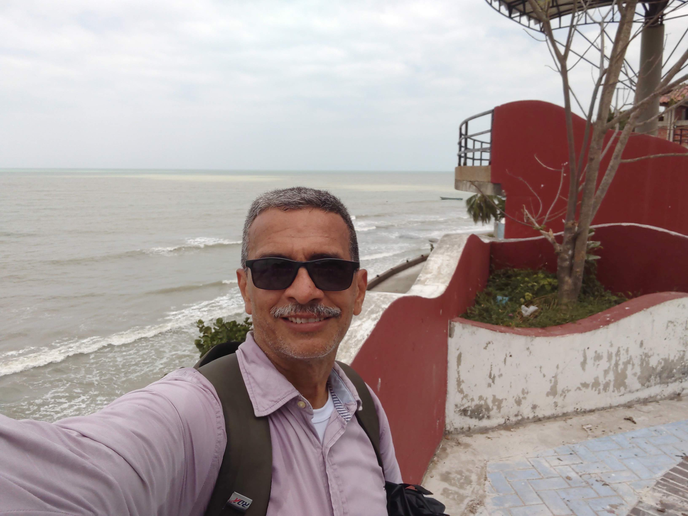

Soy Danuil Santiago, un apasionado del diseño que convierte conceptos en historias visuales.
Me especializo en diseño editorial y busco fusionar creatividad con estrategia para marcas que quieren destacar.
Llevo más de 20 años en el campo del diseño gráfico, tiempo en el cual he tenido la oportunidad de adquirir conocimientos que me han permitido proyectar mi carrera hacia nuevos horizontes.
